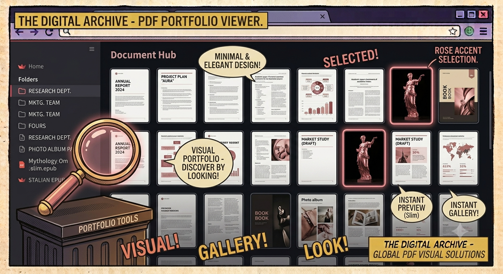

← Documenti & PDFpdfshow
Visualizzatore rapido di copertine PDF. Sfoglia intere cartelle di documenti con una griglia di anteprime uniformi e pulite. Apri qualsiasi PDF con un click.
📖 Cos'è
pdfshowè un visualizzatore web locale che trasforma una cartella piena di PDF in una galleria visiva di copertine, permettendo di identificare documenti a colpo d'occhio senza aprirli uno per uno. Costruito con Streamlit, estrae la prima pagina di ogni PDF trovato nella directory di esecuzione, la converte in immagine con PyMuPDF (fitz) e la ridimensiona a una dimensione uniforme di 200×280 pixel con Pillow (qualità LANCZOS). Il risultato è una griglia di anteprime pulita e omogenea, navigabile nel browser.
👤 A chi serve
pdfshow è pensato per chiunque lavori con molteplici PDF e fatichi a orientarsi tra nomi di file criptici. Ricercatori e accademici con cartelle piene di paper scientifici (spesso con nomi come "paper_final_v3_revised.pdf") possono identificare l'articolo giusto dalla copertina invece di aprirli a tentativi. Avvocati e commercialisti che gestiscono centinaia di contratti e fatture trovano subito il documento dall'aspetto visivo. Designer e creativi con portfolio in PDF sfogliano i lavori come in una galleria. Bibliotecari digitali che catalogano collezioni di documenti scansionati apprezzano la visione d'insieme.
⚙️ Come funziona
All'avvio (streamlit run show.py), pdfshow scansiona la directory corrente con os.listdir() filtrando i file con estensione .pdf. Per ogni PDF trovato, la funzione get_thumbnail() (decorata con @st.cache_data) apre il file con PyMuPDF, estrae la prima pagina (doc[0]), la renderizza come immagine pixmap e la converte in un oggetto PIL Image. L'immagine viene ridimensionata a 200×280 pixel con Image.LANCZOS, producendo anteprime uniformi indipendentemente dal formato originale (A4, Letter, orizzontale). Le anteprime vengono disposte in una griglia reattiva con st.columns(n). Sotto ogni anteprima, un pulsante richiama os.startfile() (Windows), open (macOS) o xdg-open (Linux) per aprire il PDF nel visualizzatore predefinito.
🎯 Perché pdfshow
Hai mai passato minuti ad aprire PDF uno per uno cercando il documento giusto? pdfshow risolve questo problema: ti mostra tutte le copertine in una griglia uniforme, rendendo immediato riconoscere ogni documento dal suo aspetto visivo. Basta un click per aprirlo nel visualizzatore predefinito.
🖼️ Caratteristiche Principali
- Anteprime uniformi — Tutte le copertine vengono ridimensionate a 200×280 px con Pillow, qualità LANCZOS
- Griglia reattiva — Layout adattivo via Streamlit
st.columns(), si adatta alla larghezza dello schermo - Cache intelligente — Le anteprime vengono cachate con
st.cache_dataper caricamenti istantanei - Apri con un click — Pulsante sotto ogni anteprima per aprire il PDF nel visualizzatore di sistema
- Auto-detection — Rileva automaticamente tutti i PDF nella directory di esecuzione
🏗️ Come Funziona
- All'avvio, pdfshow scansiona la directory corrente alla ricerca di file
.pdf - Per ogni PDF trovato, usa PyMuPDF (fitz) per estrarre la prima pagina
- La pagina viene convertita in immagine e ridimensionata a 200×280 pixel con Pillow (LANCZOS)
- Le anteprime vengono cachate — alla riapertura sono istantanee
- La griglia viene renderizzata con Streamlit in modalità wide per sfruttare tutto lo schermo
🎨 Design dell'Interfaccia
- Layout wide — Sfrutta l'intera larghezza dello schermo per massimizzare il numero di colonne
- Griglia pulita — Le anteprime uniformi creano un layout ordinato e professionale
- Feedback immediato — Barra di caricamento durante la generazione delle anteprime
- Web-based — Si apre nel browser, nessuna installazione GUI nativa necessaria
📦 Installazione
# Clona il repository git clone https://github.com/vigliafg/pdfshow.git cd pdfshow # Installa le dipendenze pip install -r requirements.txt # Posiziona i tuoi PDF nella stessa directory... # ...e avvia l'app! streamlit run show.py
💡 Casi d'Uso
- Librerie PDF — Sfoglia visivamente grandi collezioni di documenti
- Fatture e contratti — Identifica rapidamente documenti dal loro layout
- Paper accademici — Riconosci gli articoli dalla prima pagina
- Portfolio design — Mostra anteprime del tuo lavoro in PDF